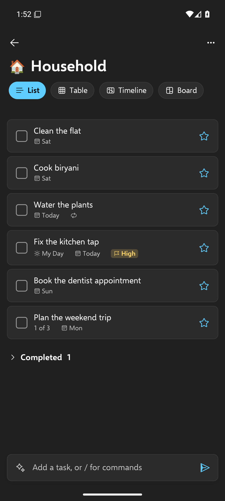
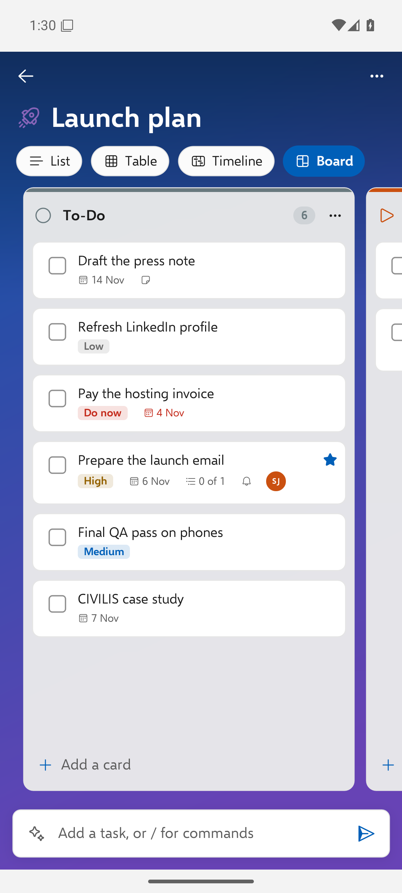

Use Docket
The Android app
Docket for Android has the same features as the Windows app, in the same Fluent design, and works with the same tasks.


#Install and sign in
- Install the APK from Releases (allow installing from your browser or file manager when Android asks), or from the Play Store once Docket is listed there.
- Open Docket and enter your server address:
- Windows install: the Tailscale address of your PC, like
https://my-pc.tail1234.ts.net(set it up); - Docker server:
https://your-domain; - your own Vikunja: its address.
- Windows install: the Tailscale address of your PC, like
- Enter your Vikunja username and password. Docket makes a token for the phone; your password isn't stored.
#Everyday use
- Home shows search, the smart lists with counts, and your lists and groups.
- Add a task with the add bar; quick-add words and commands work, including
/ai. - Swipe right on a task to add it to My Day; swipe left to delete it.
- Tap a task to open it: subtasks, checklist, My Day, reminder, due date, repeat (including custom), priority, categories, assignees, list, files (open and add), notes, delete.
- My Day suggestions, Planned grouped by date, sorting and a completed section work as on Windows.
- Views: List, Table, Timeline (the phone's Gantt) and Board for every list.
- Lists: rename, delete, icon, background, share.
- Theme: light, dark or system.
#People and sharing
Share lists with people and teams and assign tasks, as on Windows (people, teams and sharing). Creating brand-new local accounts for people is done from the Docket app on the PC that runs your server.
#Reminders
Reminders become Android notifications. They're scheduled each time you open Docket, so open the app now and then after adding reminders elsewhere (on the PC or through an AI). Allow notifications when Android asks; on some phones you also need to allow alarms and reminders and turn off battery optimisation for Docket.
#AI planning
Settings > AI offers the same choices as Windows: Local AI on your PC (Ollama, over your network), Claude, ChatGPT, Gemini (with your API key, stored in Android's secure storage) or Off. See AI planning.
#Building it yourself
The app is .NET MAUI in src/Docket.Mobile. Build notes and the Play Store checklist: ANDROID.md.